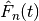
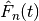
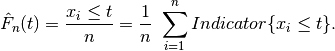
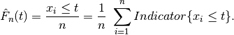

Topic Modeling with Latent Dirichlet Allocation¶
Topic modeling algorithms are a class of statistical approaches to partitioning items in a data set into subgroups. As the name implies, these algorithms are often used on corpora of textual data, where they are used to group documents in the collection into semantically-meaningful groupings. For an overall introduction to topic modeling, the reader might refer to the work of David Blei and Michael Jordan, who are credited with creating and popularizing topic modeling in the machine learning community. In particular, Blei’s 2011 paper provides a nice introduction, and is freely-available online [1] .
LDA is a commonly-used algorithm for topic modeling, but, more broadly, is considered a dimensionality reduction technique. It contrasts with other approaches (for example, latent semantic indexing), in that it creates what’s referred to as a generative probabilistic model — a statistical model that allows the algorithm to generalize its approach to topic assignment to other, never-before-seen data points. For the purposes of exposition, we’ll limit the scope of our discussion of LDA to the world of natural language processing, as it has an intuitive use there (though LDA can be used on other types of data). In general, LDA represents documents as random mixtures over topics in the corpus. This makes sense because any work of writing is rarely about a single subject. Take the case of a news article on the President of the United States of America’s approach to healthcare as an example. It would be reasonable to assign topics like President, USA, health insurance, politics, or healthcare to such a work, though it is likely to primarily discuss the President and healthcare.
LDA assumes that input corpora contain documents pertaining to a given number of topics, each of which are associated with a variety of words, and that each document is the result of a mixture of probabilistic samplings: first over the distribution of possible topics for the corpora, and second over the list of possible words in the selected topic. This generative assumption confers one of the main advantages LDA holds over other topic modeling approaches, such as probabilistic and regular LSI. As a generative model, LDA is able to generalize the model it uses to separate documents into topics to documents outside the corpora. For example, this means that using LDA to group online news articles into categories like Sports, Entertainment, and Politics, it would be possible to use the fitted model to help categorize newly-published news stories. Such an application is beyond the scope of approaches like LSI. What’s more, when fitting an LSI model, the number of parameters that have to be estimated scale linearly with the number of documents in the corpus, whereas the number of parameters to estimate for an LDA model scales with the number of topics — a much lower number, making it much better-suited to working with large data sets.
The Typical Latent Dirichlet Allocation Workflow
Although every user is likely to have his or her own habits and preferred approach to topic modeling a document corpus, there is a general workflow that is a good starting point when working with new data. The general steps to the topic modeling with LDA include:
- Data preparation and ingest
- Assignment to training or testing partition
- Graph construction
- Training LDA
- Evaluation
- Interpretation of results
Data preparation and ingest
Most topic modeling workflows involve several data preprocessing and cleaning steps. Depending on the characteristics of the data being analyzed, there are different best-practices to use here, so it’s important to be familiar with the standard procedures for analytics in the domain from which the text originated. For example, in the biomedical text analytics community, it is common practice for text analytics workflows to involve preprocessing for identifying negation statements (Chapman et al., 2001 [2] ). The reason for this is many analysts in that domain are examining text for diagnostic statements — thus, failing to identify a negated statement in which a disease is mentioned could lead to undesirable false-positives, but this phenomenon may not arise in every domain. In general, both stemming and stop word filtering are recommended steps for topic modeling preprocessing. Stemming refers to a set of methods used to normalize different tenses and variations of the same word (for example, stemmer, stemming, stemmed, and stem). Stemming algorithms will normalize all variations of a word to one common form (for example, stem). There are many approaches to stemming, but the Porter Stemming (Porter, 2006 [3] ) is one of the most commonly-used.
Removing common, uninformative words, or stop word filtering, is another commonly-used step in data preprocessing for topic modeling. Stop words include words like the, and, or a, but the full list of uninformative words can be quite long and depend on the domain producing the text in question. Example stop word lists online [4] can be a great place to start, but being aware of the best-practices in the applicable field is necessary to expand upon these.
There may be other preprocessing steps needed, depending on the type of text being worked with. Punctuation removal is frequently recommended, for example. To determine what’s best for the text being analyzed, it helps to understand a bit about what how LDA analyzes the input text. To learn the topic model, LDA will typically look at the frequency of individual words across documents, which are determined based on space-separation. Thus, each word will be interpreted independent of where it occurs in a document, and without regard for the words that were written around it. In the text analytics field, this is often referred to as a bag of words approach to tokenization, the process of separating input text into composite features to be analyzed by some algorithm. When choosing preprocessing steps, it helps to keep this in mind. Don’t worry too much about removing words or modifying their format — you’re not manipulating your data! These steps simply make it easier for the topic modeling algorithm to find the latent topics that comprise your corpus.
Assignment to training or testing partition
The random assignment to training and testing partitions is an important step in most every machine learning workflow. It is common practice to withhold a random selection of one’s data set for the purpose of evaluating the accuracy of the model that was learned from the training data. The results of this evaluation allow the user to confidently speak about the ability to generalize the trained model. When speaking in these terms, be cautious that you only discuss ability to generalize the broader population from which your data was originally obtained. If a topic model is trained on neuroscience-related publications, for example, evaluating the model on other neuroscience-related publications is valid. It would not be valid to discuss the model’s ability to work on documents from other domains.
There are various schools of thought for how to assign a data set to training and testing collections, but all agree that the process should be random. Where analysts disagree is in the ratio of data to be assigned to each. In most situations, the bulk of data will be assigned to the training collection, because the more data that can be used to train the algorithm, the better the resultant model will typically be. It’s also important that the testing collection have sufficient data to be able to reflect the characteristics of the larger population from which it was drawn (this becomes an important issue when working with data sets with rare topics, for example). As a starting point, many people will use a 90%/10% training/test collection split, and modify this ratio based on the characteristics of the documents being analyzed.
Graph construction
Trusted Analytics Platform uses a bipartite graph, to learn an LDA topic model. This graph contains vertices in two columns. The left-hand column contains unique ids, each corresponding to a document in the training collection, while the right-hand column contains unique ids corresponding to each word in the entire training set, following any preprocessing steps that were used. Connections between these columns, or edges, denote the number of times a particular word appears in a document, with the weight on the edge in question denoting the number of times the word was found there. After graph construction, many analysts choose to normalize the weights using one of a variety of normalization schemes. One approach is to normalize the weights to sum to 1, while another is to use an approach called term frequency-inverse document frequency (tfidf), where the resultant weights are meant to reflect how important a word is to a document in the corpus. Whether to use normalization — or what technique to use — is an open question, and will likely depend on the characteristics of the text being analyzed. Typical text analytics experiments will try a variety of approaches on a small subset of the data to determine what works best.

Figure 1 - Example layout of a bipartite graph for LDA.
Training the Model
In using LDA, we are trying to model a document collection in terms of topics
 , where each  describes a distribution
over the set of words in the training corpus.
Every document
, where each  describes a distribution
over the set of words in the training corpus.
Every document  , then, is a vector of proportions
, then, is a vector of proportions  ,
where
,
where  is the proportion of the
is the proportion of the  document for
topic
document for
topic  .
The topic assignment for document is
.
The topic assignment for document is  , and
 is the topic assignment for the
, and
 is the topic assignment for the  word
in document .
The words observed in document are :math”w_{d}, and
word
in document .
The words observed in document are :math”w_{d}, and
 is the word in document .
The generative process for LDA, then, is the joint distribution of hidden and
observed values
is the word in document .
The generative process for LDA, then, is the joint distribution of hidden and
observed values

This distribution depicts several dependencies: topic assignment
depends on the topic proportions ,
and the observed word depends on topic assignment
and all the topics , for example.
Although there are no analytical solutions to learning the LDA model, there
are a variety of approximate solutions that are used, most of which are based
on Gibbs Sampling (for example, Porteous et al., 2008 [5] ).
The Trusted Analytics Platform uses an implementation related to this.
We refer the interested reader to the primary source on this approach to learn
more (Teh et al., 2006 [6] ).
Evaluation
As with every machine learning algorithm, evaluating the accuracy of the model that has been obtained is an important step before interpreting the results. With many types of algorithms, the best practices in this step are straightforward — in supervised classification, for example, we know the true labels of the data being classified, so evaluating performance can be as simple as computing the number of errors, calculating receiver operating characteristic, or F1 measure. With topic modeling, the situation is not so straightforward. This makes sense, if we consider with LDA we’re using an algorithm to blindly identify logical subgroupings in our data, and we don’t a priori know the best grouping that can be found. Evaluation, then, should proceed with this in mind, and an examination of homogeneity of the words comprising the documents in each grouping is often done. This issue is discussed further in Blei’s 2011 introduction to topic modeling [7] . It is of course possible to evaluate a topic model from a statistical perspective using our hold-out testing document collection — and this is a recommended best practice — however, such an evaluation does not assess the topic model in terms of how they are typically used.
Interpretation of results
After running LDA on a document corpus, users will typically examine the top
 most frequent words that can be found in each grouping.
With this information, one is often able to use their own domain expertise to
think of logical names for each topic (this situation is analogous to the step
in principal components analysis, wherein statisticians will think of logical
names for each principal component based on the mixture of dimensions each
spans).
Each document, then, can be assigned to a topic, based on the mixture of topics
it has been assigned.
Recall that LDA will assign each document a set of probabilities
corresponding to each possible topic.
Researchers will often set some threshold value to make a categorical judgment
regarding topic membership, using this information.
most frequent words that can be found in each grouping.
With this information, one is often able to use their own domain expertise to
think of logical names for each topic (this situation is analogous to the step
in principal components analysis, wherein statisticians will think of logical
names for each principal component based on the mixture of dimensions each
spans).
Each document, then, can be assigned to a topic, based on the mixture of topics
it has been assigned.
Recall that LDA will assign each document a set of probabilities
corresponding to each possible topic.
Researchers will often set some threshold value to make a categorical judgment
regarding topic membership, using this information.
footnotes
| [1] | http://www.cs.princeton.edu/~blei/papers/Blei2011.pdf |
| [2] | http://www.sciencedirect.com/science/article/pii/S1532046401910299 |
| [3] | http://tartarus.org/~martin/PorterStemmer/index.html |
| [4] | http://www.textfixer.com/resources/common-english-words.txt |
| [5] | http://www.ics.uci.edu/~newman/pubs/fastlda.pdf |
| [6] | http://machinelearning.wustl.edu/mlpapers/paper_files/NIPS2006_511.pdf |
| [7] | http://www.cs.princeton.edu/~blei/papers/Blei2011.pdf |